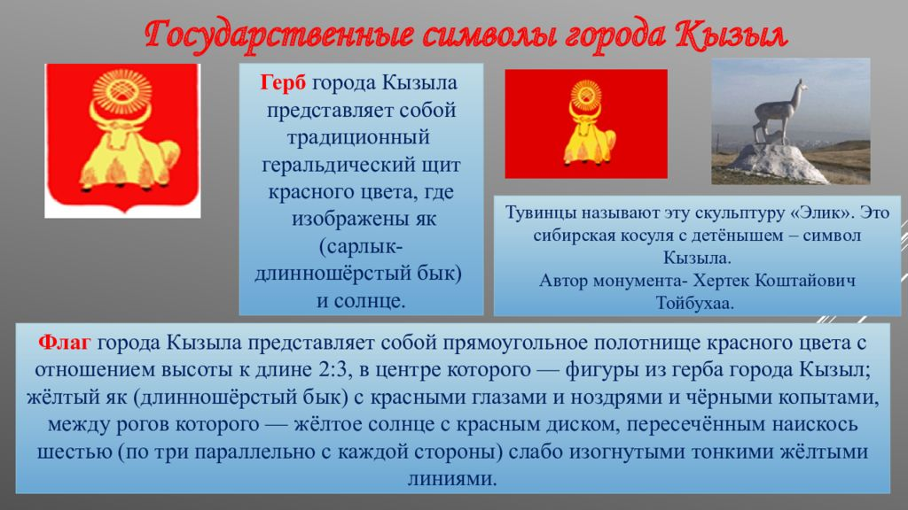

КЫЗЫ́Л, город в России, столица Республики Тыва, образует гор. округ. Нас. 116,0 тыс. чел. (2017). Расположен в географич. центре Азии, в вост. части Тувинской котловины, пристань в месте слияния рек Большой Енисей (Бий-Хем) и Малый Енисей (Ка-Хем), образующих р. Верхний Енисей (Улуг-Хем). Через К. проходит федеральная автодорога «Енисей» Красноярск – Абакан – Кызыл – гос. граница с Монголией; ближайшая ж.-д. станция – Абакан.
>Символика города кызыл
